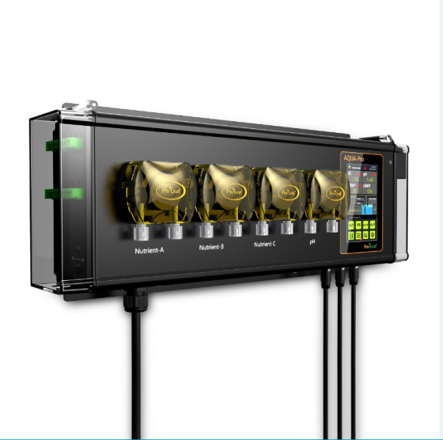

Cirebon Smart Farm adalah kebun hidroponik modern di Cirebon, Jawa Barat. Kami menanam hami melon premium dan selada segar di dalam greenhouse yang suhu, kelembaban, dan nutrisinya dikendalikan sistem otomatis. Sekarang kami sedang menyiapkan lini berikutnya, yaitu budidaya ikan nila dengan sistem bioflok.
Kenapa Kami Bertani Seperti Ini
Pertanian di Indonesia sering kalah bukan karena tanahnya kurang subur, melainkan karena hasilnya sulit diprediksi. Cuaca berubah, hama datang, dan mutu panen naik turun tanpa pola. Pembeli besar membutuhkan kepastian, dan kepastian itu hanya lahir dari data.
Karena itu kami membangun kebun yang setiap variabelnya diukur. Nutrisi diberikan lewat sistem dosing dengan takaran presisi. Kelembaban dan sirkulasi udara diatur kipas otomatis. Suhu greenhouse dipantau terus-menerus. Aerasi microbubble menjaga kadar oksigen di zona akar. Semua itu bermuara pada satu hal: panen yang seragam, berulang, dan bisa dijanjikan kepada pembeli.
Pendekatan yang sama sekarang kami bawa ke air. Sistem bioflok memungkinkan kami memelihara ikan pada kepadatan tinggi dengan parameter air yang terukur setiap hari, persis seperti cara kami memperlakukan larutan nutrisi di talang hidroponik.

Yang Kami Pegang
Empat hal yang menentukan setiap keputusan di kebun
Terukur
Setiap parameter dicatat, dari pH larutan sampai suhu harian. Keputusan diambil dari angka, bukan dari kebiasaan.
Berkelanjutan
Air dipakai berulang, limbah diolah kembali menjadi nutrisi, dan penggunaan bahan kimia ditekan seminimal mungkin.
Jujur pada Pembeli
Kami hanya menjanjikan yang benar-benar bisa kami kirim. Produk yang belum siap kami sebut belum siap.
Terbuka Berbagi
Catatan teknis kami buka untuk petani lain. Pertanian modern tumbuh lebih cepat kalau ilmunya tidak disimpan sendiri.
Perjalanan Kebun Kami
Dibangun bertahap, satu sistem pada satu waktu
-
Tahap 1 — Dasar Hidroponik
Instalasi talang dan sistem NFT pertama dibangun. Fokusnya satu: memastikan larutan nutrisi mengalir stabil dan akar mendapat oksigen cukup.
-
Tahap 2 — Otomatisasi Greenhouse
Sistem dosing otomatis, kipas pengatur kelembaban, dan pemantauan suhu real-time dipasang. Sejak titik ini hasil panen mulai bisa diprediksi.
-
Tahap 3 — Produk Premium
Hami melon dan selada hidroponik masuk ke standar mutu yang konsisten, dengan penanganan pascapanen dan kemasan food grade.
-
Tahap 4 — Teknologi Microbubble
Aerasi microbubble diterapkan untuk menaikkan kadar oksigen terlarut di zona akar, yang berdampak langsung pada kecepatan tumbuh tanaman.
-
Sedang berjalan — Lini Bioflok
Kolam bioflok untuk ikan nila sedang disiapkan, lengkap dengan rencana menyambungkannya ke greenhouse sebagai sistem akuaponik. Lihat rencananya.
0
% Tingkat Keberhasilan Panen
0
Tanaman Dikelola per Bulan
0
Tahun Pengalaman Hidroponik
0
% Sistem Otomatis
Wilayah yang Kami Jangkau
Pengiriman berpendingin untuk area dekat, ekspedisi cold storage untuk yang jauh
Untuk Cirebon dan sekitarnya, produk kami antar sendiri dengan kendaraan berpendingin agar kesegarannya terjaga sejak dipanen. Untuk kota yang lebih jauh, kami bekerja sama dengan jasa ekspedisi yang memiliki fasilitas penyimpanan dingin.
Yang Kami Kerjakan
Tiga lini yang berjalan di bawah satu sistem kendali
Hami Melon Premium
Melon hidroponik dengan kemanisan 14 sampai 16 Brix dan ukuran seragam, dipanen pada tingkat kematangan optimal.
Selada Hidroponik
Dipanen pagi hari langsung dari greenhouse, dikemas higienis, dan dikirim dalam rantai dingin.
Ikan Nila Bioflok
Lini perikanan yang sedang disiapkan. Halaman panduannya sudah terbuka lengkap dengan daftar peralatan.
Konsultasi Teknologi
Pendampingan untuk perorangan maupun perusahaan yang ingin membangun sistem hidroponik atau bioflok sendiri.
Mampir ke Kebun Kami
Kami menerima kunjungan calon pembeli, petani, dan siapa pun yang penasaran dengan pertanian terkendali. Hubungi kami lebih dulu untuk mengatur jadwal.